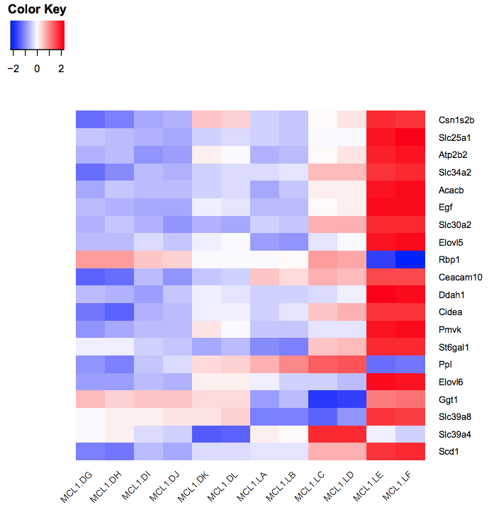

Heatmaps are commonly used to visualize RNA-Seq results. They are useful for visualizing the expression of genes across the samples. In this tutorial we show how the heatmap2 tool in Galaxy can be used to generate heatmaps. The heatmap2 tool uses the heatmap.2 function from the R gplots package. Here we will demonstrate how to make a heatmap of the top differentially expressed (DE) genes in an RNA-Seq experiment, similar to what is shown for the fruitfly dataset in the RNA-seq ref-based tutorial. We will also show how a heatmap for a custom set of genes an be created.
To generate a heatmap of RNA-seq results, we need a file of normalized counts. This file is provided for you here. The expression values have been normalized for differences in sequencing depth and composition bias between the samples. To generate this file yourself, see the RNA-seq counts to genes tutorial, and run limma-voom selecting “Output Normalised Counts Table?”: Yes. You could also use a file of normalized counts from other RNA-seq differential expression tools, such as edgeR or DESeq2. We also need some genes to plot in the heatmap.
The data for this tutorial comes from a Nature Cell Biology paper, EGF-mediated induction of Mcl-1 at the switch to lactation is essential for alveolar cell survival), Fu et al. 2015. This study examined the expression profiles of basal and luminal cells in the mammary gland of virgin, pregnant and lactating mice. Six groups are present, with one for each combination of cell type and mouse status.
Rename the counts dataset as normalized counts, the limma-voom_luminalpregnant-luminallactate file as DE results and the list of genes as heatmap genes using the galaxy-pencil (pencil) icon.
Check that the datatype is tabular.
If the datatype is not tabular, please change the file type to tabular.
tip Tip: Changing the datatype
Click on the galaxy-pencilpencil icon for the dataset to edit its attributes
In the central panel, click on the galaxy-chart-select-dataDatatypes tab on the top
Select tabular
Click the Change datatype button
Click on the galaxy-eye (eye) icon of the the DE results file and take a look. It should look like below with 8 columns (just the first few rows are shown).
Figure 2: DE results
Create heatmap of top DE genes
First we’ll demonstrate how to create a heatmap of the top differentially expressed genes in an RNA-seq dataset. To do this we need to extract the differentially expressed genes from the DE results file. This file contains the results from comparing gene expression in the luminal cells in the pregnant versus lactating mice. It includes genes that are not significantly differentially expressed. As in the RNA-seq counts to genes tutorial), we’ll call genes significantly differentially expressed in this dataset if they pass the thresholds of adjusted P value < 0.01 and fold change of > 1.5 (log2FC of 0.58).
Extract all significant genes
hands_on Hands-on: Extract the significant genes
Filter data on any column using simple expressionstool with the following parameters to extract genes with adj P < 0.01:
param-file“Filter”: DE results
param-text“With following condition”: c8<0.01
param-text“Number of header lines to skip”: 1
Filter data on any column using simple expressionstool with the following parameters to extract genes with absolute fold change > 1.5 (log2fc of 0.58):
param-file“Filter”: output of Filter tool
param-text“With following condition”: abs(c4)>0.58
param-text“Number of header lines to skip”: 1
Rename file to Significant genes
Extract the top significant genes
This gives us a file with all the significant genes, the genes that pass our thresholds for statistical and biological significance. As we can see there are many genes (~1,610), too many to plot in one heatmap, so we’ll select the top 20 by P value.
hands_on Hands-on: Extract the top significant genes by P value
Sort data in ascending or descending ordertool with the following parameters to sort by P value:
param-file“Sort Query”: output of 2nd Filter tool
param-text“Number of header lines to skip”: 1
param-select“on Column”: 7
param-select“in”: Ascending order
param-select“Flavor”: General numeric sort ( scientific notation -g)
Select first lines from a datasettool with the following parameters to select top genes:
param-text“Select first”: 21 (20 genes plus header row)
param-file“from”: output of Sort tool
Rename file as top 20 by Pvalue
Extract the normalized counts for top genes
Now we have a file that contains only the top 20 genes from the DE results. Next we need to get the normalized counts for these genes, from the file containing the normalized counts for all genes in the experiment, and then extract just the columns we need for the heatmap (the normalized counts and gene labels).
First click on the galaxy-eye (eye) icon and take a look at the normalized counts file that we imported. It should look like below (just the first few rows and columns are shown). Note that the normalized count values are log2. We will join our top 20 by Pvalue file to the normalized counts file, matching on the ENTREZID columns.
Figure 3: Normalized counts
hands_on Hands-on: Extract the normalized counts for the top genes
Join two Datasets side by side on a specified fieldtool with the following parameters to join on the ENTREZID column:
param-file“Join”: the top 20 by Pvalue file
param-select“using column”: Column: 1
param-file“with”: normalized counts file
param-select“and column”: Column: 1
param-select“Keep the header lines”: Yes
The generated file has more columns than we need for the heatmap. In addition to the columns with normalized counts (in log2), there is the and other information. We need to remove the extra columns.
Cut columns from a tabletool to extract the columns with the gene symbols and normalized counts
param-text“Cut columns”: c2,c12-c23
param-select“Delimited by”: Tab
param-file“From”: the joined dataset (output of Join two Datasetstool)
The file should look like below with the 20 genes in the rows and the 12 samples in the columns (just the first few columns are shown).
Figure 4: Heatmap input
Now that we have our file with just the normalized counts for the genes we want, we can create a heatmap.
Create heatmap of top genes
hands_on Hands-on: Plot the heatmap of top genes
heatmap2tool with the following parameters:
param-file“Input should have column headers”: output of Cuttool
param-select“Data transformation”: Plot the data as it is
param-check“Enable data clustering”: No
param-select“Labeling columns and rows”: Label my columns and rows
param-select“Coloring groups”: Blue to white to red
param-select“Data scaling”: Scale my data by row (scale genes)
You should see a heatmap like below. Note that here we are plotting the top genes differentially expressed in the luminal cells from the pregnant mice (MCL1.LC and MCL1.LD) versus the luminal cells from the lactating mice (MCL1.LE and MCL1.LF). This heatmap enables us to see the expression of these genes in all the samples from the different groups in the experiment (basal virgin, basal pregnant, basal lactating, luminal virgin, luminal pregnant, luminal lactating).
Figure 5: Heatmap of top DE genes
question Questions
Why do we not use clustering here?
Why do we scale the rows (genes)? Try rerunning heatmap2 changing the “Data scaling” parameter to Do not scale my data.
The genes are ordered by P value. Can you make the heatmap with the genes ordered by fold change? Hint: Sort by the logFC column in ascending order to have the genes downregulated in the luminal pregnant vs lactating (negative fold change) at the top and the upregulated genes (positive fold change) at the bottom.
How could we make a heatmap of the top 10 most upregulated and top 10 most downregulated significant genes?
solution Solution
We don’t use clustering here as we want to keep the genes in the order we input (ordered by P value).
We scale the genes as otherwise large expression values from highly expressed genes would dominate the plot, see below.
Figure 6: Heatmap without scaling genes
To make the heatmap with these genes ordered by logFC, we could Sort the output of the Join step on the logFC column, then Cut the columns as before and remake the heatmap. It should look like below.
Figure 7: Heatmap sorted by logFC
To make a heatmap of the most upregulated and downregulated significant genes, we could Sort on the logFC column (instead of P value above), then use the Select first and Select last tools to select the genes with the largest and smallest fold changes (10 genes for each) and the Concatenate tool to combine the outputs of the first and last Selects into one file. We would then repeat the Join and Cut steps as before to get the normalized counts and make the heatmap as below (Note that one gene name in the middle is missing as it is a gene that has NA for gene symbol)
Figure 8: Heatmap of top 10 up and down
Create heatmap of custom genes
You can also create a heatmap for a custom set of genes. To demonstrate this, we will create a heatmap for the 31 genes in Figure 6b from the original paper using this dataset (see below). These 31 genes include the authors’ main gene of interest in the paper, Mcl1, and a set of cytokines/growth factors identified as differentially expressed. We will recreate this heatmap here. To see how to visualize these genes in a volcano plot see the tutorial here.
Figure 9: Fu et al, Nat Cell Biol 2015
These 31 genes are in the file we imported called heatmap genes, shown below.
Figure 10: Heatmap genes
As in the previous example, we need to extract the normalized counts for just these 31 genes. To do that we will join the heatmap genes file with the normalized counts file, on the Gene Symbol columns this time (instead of ENTREZID), and then extract the columns we need.
Extract normalized counts for custom genes
hands_on Hands-on: Extract the normalized counts for the genes of interest
Join two Datasets side by side on a specified fieldtool with the following parameters:
param-file“Join”: the heatmap genes file
param-select“using column”: Column: 1
param-file“with”: normalized counts file
param-select“and column”: Column: 2
param-select“Keep the header lines”: Yes
Cut columns from a tabletool to extract the columns with the gene ids and normalized counts
param-text“Cut columns”: c1,c5-c16
param-select“Delimited by”: Tab
param-file“From”: the joined dataset (output of Join two Datasetstool)
The genes are in rows and the samples in columns, we could leave the genes in rows but we will transpose to have genes in columns and samples in rows as in the Figure in the paper.
Transposetool to have samples in rows and genes in columns
“Input tabular dataset”:
param-file“From”: the Cut dataset (output of Cuttool)
We now have a table with the 31 genes in columns and the normalized counts for the 12 samples in rows, similar to below (just the first few columns are shown).
Figure 11: Transposed input
Create heatmap of custom genes
hands_on Hands-on: Plot the heatmap of custom genes
heatmap2tool with the following parameters:
param-file“Input should have column headers”: the generated table (output of Transposetool)
param-select“Data transformation”: Plot the data as it is
param-check“Enable data clustering”: No
param-select“Labeling columns and rows”: Label my columns and rows
param-select“Coloring groups”: Blue to white to red
param-select“Data scaling”: Scale my data by column (scale genes)
You should see a heatmap like below.
Figure 12: Fu heatmap regenerated
question Question
How does the heatmap compare to the one from the Fu paper Fig 6 (above)?
solution Solution
The heatmap looks similar to the heatmap in the paper.
Heatmaps can be used to visualize the expression of genes in RNA-Seq samples
Useful literature
Further information, including links to documentation and original publications, regarding the tools, analysis techniques and the interpretation of results described in this tutorial can be found here.
congratulations Congratulations on successfully completing this tutorial!
feedback Give us even more feedback on this content!
To give us more detailed feedback about these materials, please take a moment to fill in the extended Feedback Form.
 Maria Doyle
Maria Doyle